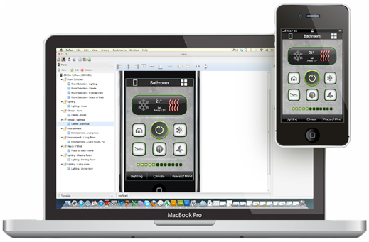

Software Livre
Por: Guilherme de Souza Silva, Vinícius Fonseca Maciel

Bem vindo ao mundo livre dos softwares. Conforme a Free Software Foundation, um software é livre quando há:
OpenRemote MAC
-
A liberdade de se executar o software, para qualquer propósito (liberdade no. 0);
-
A liberdade para estudar como o software funciona, e adaptá-lo para as suas necessidades (liberdade no. 1). Acesso ao código-fonte é um pré-requisito para esta liberdade;
-
A liberdade de redistribuir cópias do software (liberdade no. 2);
-
A liberdade de distribuir o software aperfeiçoado por você (liberdade no. 3).
Assim, o software livre se baseia na oportunidade de milhares de programadores, a maioria constituída por voluntários, colaborarem com um ou vários softwares, tornando-os melhores a cada nova versão.
Nesta edição confira um software livre e open-source que controla toda uma casa, ou até mesmo prédio, cujo o conceito se baseia em Internet das Coisas.
Referências:
}